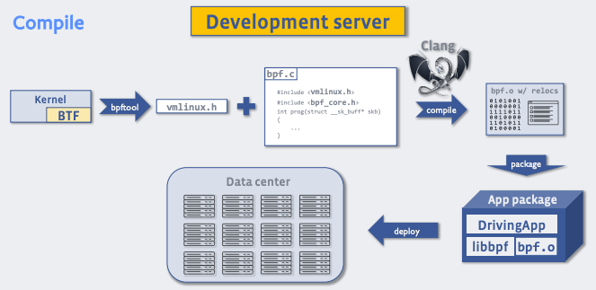
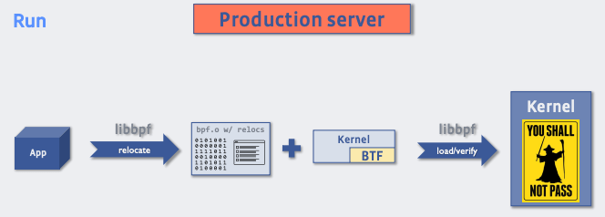

#230828 BTF¶
概述¶
BPF Type Format (BTF) 里 BPF 用来存储调试信息的格式，类似于 ELF 文件存储调试信息的 DWARF 格式。但是 BTF 更简单，更紧凑，比如内核的 BTF 信息也才大概 5M，这个大小可以随着内核发行版默认安装，而不是像 kernel-devel 这些包需要用到才安装。
# bpftool btf
1: name [vmlinux] size 5555738B
...
45: name [vboxsf] size 8723B
有了内核自身以及 BPF 程序的调试信息，就可以实现一些之前无法实现的功能。
编译带 BTF 调试信息的 bpf 程序，加 -g 选项：
clang -O2 -Wall -g -target bpf -c xdp_prog.c -o xdp_prog.o
打印出 map 值的结构（pretty-print）¶
使用 bpftool 打印使用 新语法 定义的 map，会使用人易读的格式打印，如果值的类型是一个结构体，还会打印出详细的结构信息。
# bpftool map dump id 79
[{
"key": 0,
"values": [{
"cpu": 0,
"value": {
"processed": 173,
"processed_bytes": 21524,
}
},{
"cpu": 1,
"value": {
"processed": 5,
"processed_bytes": 490,
}
}
]
}]
CO-RE(Compile Once, Run Everywhere)¶
CO-RE 让编译出来的 bpf 二进制程序（ .o 文件）可以直接在不同的内核版本上运行。而不是分发 bpf 代码（ .c 文件），然后不同的内核版本上各自编译出对应内核版本的 bpf 程序。分发 bpf 代码需要运行 bpf 程序的机器安装编译器以及内核开发相关的各种头文件，用起来比较麻烦。
首先需要使用下面这个 dump 出来的 vmlinux.h （provides CO-RE-relocatable type definitions for the kernel）来替代之前需要包含的各种内核头文件。
bpftool btf dump file /sys/kernel/btf/vmlinux format c > vmlinux.h
剩余的事就都是编译器的了，编译器会在编译出来的 .o 文件中记录下各种可能需要重定向的信息，比如读取结构体中的字段，不同的版本可能字段的偏移量不一样：
编译：
运行的时候，libbpf 会根据内核 btf 信息以及 bpf 程序中的各种重定向信息，修正字段为正确的偏移量：
更多详细使用参考：https://nakryiko.com/posts/bpf-core-reference-guide/
其他：